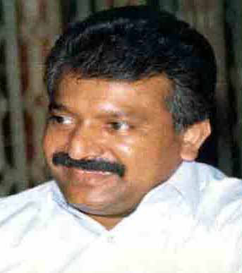
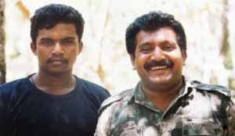

Unpacking the LTTE's Eastern Schism
Unpacking the LTTE's Eastern Schism
Jaffna Monitor hellojaffnamonitor@gmail.com 36 T he Liberation Tigers of Tamil Eelam (LTTE) was established on May 5, 1976. Throughout its 27- year history until 2004, the organization encountered numerous challenges and pressures. In 1986, the Liberation Tigers of Tamil Eelam (LTTE) banned the Tamil Eelam Liberation Organization (TELO). The Tigers' leader in Batticaloa, known as Kadavul, attempted to resolve the issues by negotiating with TELO members instead of resorting to violence. However, contrary to his approach, Prabhakaran, the LTTE's supreme leader, ordered commanders stationed in the East at that time—such as Pottu Amman, Newton, and Kumarappa—to annihilate TELO and its members. Following these orders, the LTTE ruthlessly executed several TELO fighters, prompting Kadavul to leave the organization. This departure initially resulted in a significant setback for the Tigers in the East. Nonetheless, over time, the Tigers regained strength in that region, with eastern fighters ultimately becoming the backbone of the organization in subsequent years. Unpacking the LTTE's Eastern Schism Opinion BY: M.R. Stalin Gnanam A Chronicle of Fratricide: Prabhakaran Karuna Amman

Jaffna Monitor
hellojaffnamonitor@gmail.com
37
In 2004, the Liberation Tigers of Tamil Eelam
(LTTE) and its supreme leader, Velupillai
Prabhakaran, faced a critical juncture
known as the 'Eastern Split.' This internal
division presented challenges beyond the
military sphere, encompassing deep-seated
political and ideological issues that proved
insurmountable for the LTTE leader and the
organization.
The split was spearheaded by Colonel Karuna,
also known as Vinayagamoorthy Muralitharan.
A seasoned LTTE figure, Karuna had devoted
two decades to the organization and served as
the military commander of the Batticaloa and
Ampara districts. The schism threatened to
alter the course of the conflict, influenced by
a complex blend of political, social, historical,
and economic factors. Central to the rift were
profound ideological disparities between
the Tamil communities in the northern and
eastern regions, particularly the perceived
dominance of Jaffna over eastern interests.
This division marked a pivotal moment in
the LTTE's history. During this time, the
Jayanthan Brigade, a backbone of the LTTE's
military successes commanded by Colonel
Karuna Amman with about 6,000 fighters,
along with other eastern regiments, announced
their separation, leading to the Eastern Split.
Following the 2002 peace agreement,
the LTTE established its administrative
structure, appointing 32 secretaries for
various departments, all of whom were
exclusively from the Northern Province. These
authoritative decisions clearly demonstrated
that the Tamil Tigers represented a dominant
Jaffna-centric ideology.
At that time of the split, Colonel Karuna
Amman wrote a public letter to Prabhakaran.
In this letter, he explicitly criticized the Jaffna-
centric approach within the Tigers' structure
and firmly stated that a unified administration
between the Northern and Eastern Provinces
was no longer feasible. He highlighted fourteen
key issues as evidence to support his argument.
One of the key points Colonel Karuna
emphasized in his letter was the significant loss
of life among the fighters from the Batticaloa
and Ampara districts during the conflict.
He noted that out of the 6,800 fighters who
had died in battle, approximately 4,000 had
perished on the soils of Jaffna and Vanni.
Despite these substantial contributions, none
of the 32 administrative leaders appointed
by the Tamil Tigers were from Batticaloa or
Ampara. This imbalance led Karuna to express
a preference for operating directly under
Prabhakaran's command rather than under the
appointed Tamil Eelam administrators.
Despite the severe issues Colonel Karuna
raised, the LTTES' leadership neither provided
a responsible answer nor sought a compro
mise. Instead, they labelled Karuna a traitor to
the Tamil Eelam cause and engaged in efforts
to divert the direction of the narrative.
The leadership of the Tamil Tigers initiated
military operations to oust Colonel Karuna
from the East, launching attacks against
the Eastern fighters who had historically
been central to the organization's strength.
This strategy entailed significant military
engagements designed to kill Eastern fighters.
The same LTTE leaders who had successfully
negotiated with the Sri Lankan government,
previously deemed an enemy, found
themselves at a communication impasse with
their own troops—individuals with whom they
had shared meals and combated side by side
for years.
Jaffna Monitor hellojaffnamonitor@gmail.com 38 Near the Verugal riverbank on the border of Batticaloa and Trincomalee, a mass killing targeting Eastern fighters was orchestrated by Vanni LTTE commanders Banu and Sornam under the orders of Prabhakaran. Approximately 210 eastern fighters were brutally massacred. The attack made no distinctions between male and female combatants. In a further act of violence, the bodies of female fighters were desecrated; their garments were torn and scattered, leaving the scene in utter disarray. On April 10, 2004, during the Verugal massacre, a ceasefire was in place, monitored by a Norwegian-led team. Just two days prior to this violent outbreak, the team temporarily withdrew from the Eastern Province. This departure left a critical gap in oversight at a crucial time, thereby indirectly facilitating the conditions that led to the massacre. As designated overseers of the peace, their absence at this pivotal moment also implicates them in enabling the tragedy. Moreover, questions remain about how the Vanni Tigers were able to transport weapons to the Vakarai region through Omanthai and by sea. It is crucial to determine who authorized these movements. These truths must be exposed to ensure justice for the affected communities. In the current discourse on war crimes, the massacre during the ceasefire raises significant concerns. Given that this atrocity occurred during an international peace agreement, it not only constitutes a war crime but potentially an even more severe violation of international law. Notably, the Verugal massacre, carried out by the LTTE during the ceasefire, stands out as a pivotal event. This atrocity marked the first major violation that undermined the integrity of the Oslo Accord and the 2002 peace agreement, setting the stage for further escalations and eventual annihilation of the LTTE. Karuna Amman with Prabhakaran
